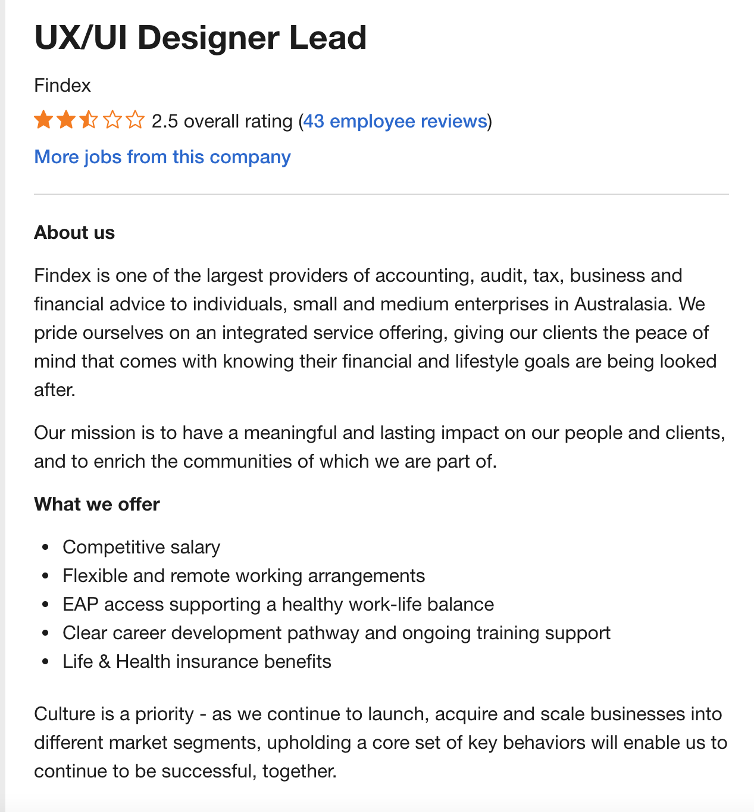

Ayesha Babar
Completed 'A' Levels, and currently studying Universal Design Principles from Curtin University of Technology, and Introduction to Information Technology from RMIT University.
A Little Bit About Me
Student ID: s3885706
I am a Muslim Pakistani girl, born in Pakistan. I moved to
Australia when I was 6 years old, and lived there for about 8-9
years before moving back to Pakistan to live with my
grandparents as my father did not want to leave his parents
alone. Of-course, I had acquired Australian Nationality before
then. I now currently reside in Pakistan with my grandparents,
parents, a younger brother and sister, Fatima, who is currently
doing this subject as well. I can speak four languages, Urdu &
English, which I am very fluent in, and Arabic & Korean, which I
still need improvement in. I have completed my 'A' Levels in
engineering from Beaconhouse School System and 2 subjects from
Curtin University, Academic and Professional Communications &
Culture to Cultures.
I enjoy reading books and watching my favourite shows on YouTube
to pass my time when I’m free. I don’t have any pets at the
moment, but I want to get a Persian kitten or a baby rabbit in
the future. I love horses as well, but owning a horse will be a
little tough so that’s out of the list!
My Interest in IT
What is your interest in IT? When did your interest in IT start? Was there a particular event or person that sparked your interest? Outline your IT experience (if any).
My interest in IT started just last year, if I am to be completely honest. My dad is a software engineer and a web developer, so it is because of him that I’m doing this very subject right now. Last year, my dad really insisted that I complete a HTML/CSS course from LinkedIn Learning, and although I really didn’t want to, I managed to learn a little bit of both languages. It was when I sat down to write code when I realised that it’s not too bad, in fact, I began to find it a little fun. My actual goal is to become a UX/UI designer, but my dad once told me that designers should have a little background knowledge of IT as well. That will help them to create implementable designs and hence, fewer of their designs will be rejected by the developer, making the web development process easier and faster. This is what made me realise that this subject is important for me.
Why did you choose to come to RMIT?
I chose RMIT for it’s amazing reputation in the field of IT and design. I’ve always wanted to join RMIT since I was a child. I passed by the university campus very often during my lifetime in Australia, and found the university appealing to the eye and something to look forward to. Since I moved to Pakistan, obviously I couldn’t experience the great campus life, so I decided to enrol online. Although I am not planning on completing a degree from RMIT, I think that the subjects they offer will be really helpful to my career.
What do you expect to learn during your studies?
From this subject, I want to learn the basics of IT and get a little background information about it. Since IT is a very vast field, I think this subject will really help me identify where my interests lie and whether or not I am suitable for this field. I expect that by the time I am done with this subject, I will have learned how to use GitHub without using git. I will be able to write simple code, and have a little know-how in the field of IT. I expect to gain a little more confidence in myself, and learn how to effectively work in groups.
My Ideal Job
Link: UX/UI Designer Lead - Job offer on SEEK 
Description of job: This job offers the lead position in UX/UI design. The applicant will be leading UX/UI designers. They offer good salary (from 80k to 100k annually), along with life and health insurance. The job is flexible, allowing the applicant to work from home, which I think is super convenient!
Skills required for this job: This job requires the applicants to:
- Have more than six years of experience with UX/UI in senior positions.
- Be able to present to clients, explaining why good UX is necessary.
- Be creative, not only when working with live designs, but when working with abstract ideas as well.
- Know how to use design tools, such as InDesign, InVision, Sketch, Adobe Suite, etc.
- Have a thorough understanding of digital trends and technologies.
- Have experience of working in a fast-moving and agile environment.
- Able to work in detail with researching, wireframing, prototyping, etc.
- Understand how UX is used for business goals, etc.
- Think strategically.
- Be culturally intelligent.
My skills:
- Culturally intelligent, have completed 'Culture to Cultures' subject from Curtin University with a distinction.
- I think that I am good at working with a team. Did team work in one of my previous subjects and it went really well.
- Have a little bit knowledge on how to use InVision.
- A little background information/ knowledge on UX/UI design.
How I will acquire the required skills: I know that I have a long way to go before I am able to acquire all the skills required for this job, but I will work hard to get there. I am planning to complete a bachelor’s degree in arts (digital experience and interaction design) in order to achieve my goal of becoming a UX/UI designer. Hopefully, nearing the end of the degree, I will have begun my internship. After completing my internship, I will hopefully get a good job in order to gain experience in the field, before I can land any leadership roles. I believe that following this path will get me all the skills I require. This plan will probably take me up to 10-12 years.
My Personal Profile
Online Myers-Briggs test report:
I am a turbulent logistician.
Role:
Sentinel
Strategy:
Constant improvement
- 69% Introverted
- 86% Observant
- 64% Thinking
- 64% Judging
- 69% Turbulent
Strengths:
- Honest and direct
- Strong-willed and dutiful
- Very responsible
- Calm and practical
- Create and enforce order
- Jacks-of-all-trades
weaknesses:
- Stubborn
- Insensitive
- Always by the book
- Judgmental
- Often unreasonably blame themselves
Link: Online Myers-Briggs test
Education Planner Organisation's learning style test report:
- Auditory: 35%
- Visual: 20%
- Tactile: 45%
I learn by touching and doing. I understand and remember things through physical movement. I are a "hands-on" learner who prefers to touch, move, build, or draw what I learn, and I tend to learn better when some type of physical activity is involved. I need to be active and take frequent breaks, I often speak with my hands and with gestures, and I may have difficulty sitting still. As a tactile learner, I like to take things apart and put things together, and I tend to find reasons to tinker or move around when I become bored. I may be very well coordinated and have good athletic ability. I can easily remember things that were done but may have difficulty remembering what I saw or heard in the process. I often communicate by touching, and I appreciate physically expressed forms of encouragement, such as a pat on the back. Here are some things that tactile learners like myself can do to learn better:
- Participate in activities that involve touching, building, moving, or drawing.
- Do lots of hands-on activities like completing art projects, taking walks, or acting out stories.
- It's OK to chew gum, walk around, or rock in a chair while reading or studying.
- Use flashcards and arrange them in groups to show relationships between ideas.
- Trace words with your finger to learn spelling (finger spelling).
- Take frequent breaks during reading or studying periods (frequent, but not long).
- It's OK to tap a pencil, shake your foot, or hold on to something while learning.
- Use a computer to reinforce learning through the sense of touch.
- Learn best by doing, not just by reading, seeing, or hearing.
Link: Education Planner Organisation's learning style test
Big-Five personality test report:
- Open-ness to experience: 7% - Very low
- Conscientiousness (Work ethic): 75% - High
- Extraversion: 25% - Low
- Agreeableness: 78% - High
- Natural reactions: 35% - Middle
Link: Big-Five personality test
What do the results of these tests mean for you? How do you think these results may influence your behaviour in a team? How should you take this into account when forming a team?
These results are extremely important to me as they have given me a chance to recognise my weaknesses and try my best to overcome them. I was kind of surprised at the accuracy of some of the results and since all my weaknesses have been laid out in front if me, I have been able to reflect on myself, thinking about solutions that will work best for me and the people around me. As I’ve gotten to know exactly where my weak points are, I can work more efficiently to reduce them. I will try my best that I don’t become a hindrance or source of frustration for my team members. As I mentioned above, since I ‘ve realised where I can go wrong, I can work to avoid making mistakes. When forming a team, I need to make sure that some of my team members are extroverted, intuitive, assertive, and learn visually. Basically, they should have the traits that I am lacking in, so that the team can produce amazing outcome and results.
My Project Idea
Name of application: My Tutor
What it is:
An application used by both students and teachers. Students will
use it to find the tutor that best suits them for their
appropriate needs, while teachers will use it to learn more
about their students, their individual personalities and needs
in order to provide the best for their students. Using 'My
Tutor' can really save students the hassle of going through
multiple processes to find the appropriate tutor. Rather than
asking around, wandering from academy to academy, students can
just use 'My Tutor' to check the teachers’ ratings/ profile and
go straight to the teacher they require.
As for teachers,
they will be able to read the students profiles, getting to know
them better even before the students arrive to class, saving the
energy and days taken to get to know their students. And the
best part, all of this will be happening in one app!
What it does:
‘My Tutor is an application that will allow students to set up
an entire academy routine. When making an account, students will
be asked to provide information about themselves, their
background and culture. Students will provide their contact
information as well, along with their learning requirements.
They will be answering some compulsory questions, and only
teachers will have access to the students’ profiles.
After
the ‘sign in’ process is complete, students will be asked to:
-
Select the subject that they wish to take tuitions for, for
example:
- Biology
- Physics
- Mathematics -
Select the timings that they wish to study in, for example:
-From: 4:00 pm
-Till: 7:00 pm -
Select the preferred ratings that they would want their
teacher to have, for example:
Between:
- Five stars to:
- Four stars - Select preferred academy or provide their location so the application can suggest the closest academy to them. This will be completely optional.
- Select whether they want to find teachers that can come to their houses to teach them or go to the teachers' house/ academy to study.
The app will then suggest teachers to the students, that match the rating, and timings for the subjects that the students have chosen. Students will then be able to view the teachers’ profiles, select teachers to study with, and join their classes. The app will then create a study routine for them. They will get a notification from the app, reminding them that it's time for class, so they don't miss it accidentally.
Students will also be able to rate their teachers and comment about them. They can give suggestions to the teachers as well, telling them what they think the teacher should have done to make the classes more beneficial. The comments and ratings will be anonymous, so the teachers, and other students will not know who gave which comment. This will make the students feel more comfortable and relaxed when giving the comments and teachers can read those and improve their teaching style.
When teachers make an account on ‘My Tutor’ they too will be asked to provide their information and backgrounds, but in their case, their information will be public, so that students can view it. Hence, the teachers will be warned that they should be mindful of the information they provide. Also, the comments and ratings given by the students will be visible on their profile page for other students to view as well. After they have made an account, a class will be made for them automatically. The name of their class will be their "Name's Class", example: "Ayesha Babar's Class" so students can identify it easily. Teachers will then be able to view all the students in their class, along with their profiles and requirements.
Why it is needed:
Study competition in
Pakistan is very tough. Parents always want their children to
come first in their class, and score A+’s and straight A’s.
Hence, nearly every second parent in Pakistan sends their
children to academies and tuitions despite the fact that they go
to school. Having been through this myself, I realised that
finding good tutors, whose teaching style and class timings
suited me was super difficult. Now my brother is facing similar
issues. 'My Tutor' will make the process of finding tutors much
easier and faster for students!
Looking at things from the
teachers’ perspective, understanding students in order to
deliver the best for them can be quite a tough and time taking
task. Sometimes, even before the teacher has got a chance to do
so, students will run away in search for other tutors, thinking
that this particular tutor was not suitable for them, or could
not fulfil their learning requirements. ‘My Tutor’ is a solution
to this major problem, helping the teachers in getting to know
their students faster. By reading the students profiles and
background information, which the students will have written
themselves, teachers will get to know their students even before
they come to class. Hence, both students and teachers will have
a happier and satisfying experience.
Tools and technologies required to make it:
In order to make the application we will require:
- A good Wi-Fi connection in order to be able to open the website in any preferred bowser to see what it looks like.
- A good working computer, keyboard, and mouse (this, of-course, is a must)!
- An up to date text editor like Visual Studio Code to write code for the application.
- A design application, like InVision, Sketch, or most preferably, Adobe Suite to add designs to the app.
- An account on GitHub or something similar.
Skills required to make it:
- Need to know HTML, CSS, and one other language like JavaScript, for example, in order to be able to write the program for the app.
- A good understanding of UX and UI design, and how to implement it into the application.
- Need to know how to use, and have some experience with apps like InVision, Sketch, and Adobe Suite in order to implement the required designs into the app.
- Need to know how to use GitHub or similar software.
Outcomes of it's success:
If this
project is successful, students will be able to find good tutors
from the comfort of their homes and be able to go directly to
the most suitable and best teacher for them. Looking for tutors
will no longer take up their precious time, days and energy.
Teachers will be able to learn about their students’
personalities by reading their profiles. This will help both the
students and teachers be happy and satisfied from their learning
and teaching experiences.
Reference list
NERIS Analytics Limited 2011-2020, “It’s so incredible to be finally understood.”, 16Personalities, viewed on 16 December 2020, <https://www.16personalities.com>
Pennsylvania Higher Education Assistance Agency 2020, What’s your learning style? 20 questions, Education Planner Organisation, viewed 16 December 2020,<http://www.educationplanner.org/students/self-assessments/learning-styles-quiz.shtml>
123test 2020, Personality test, 123test, viewed on 16 December 2020, <https://www.123test.com/personality-test/>
SEEK 2020, Job search, SEEK, viewed on 16 December 2020, <https://www.seek.com.au/job/51099050?type=promoted#searchRequestToken=fa02bdfe-43ca-4fa3-9311-f217c6084af5>